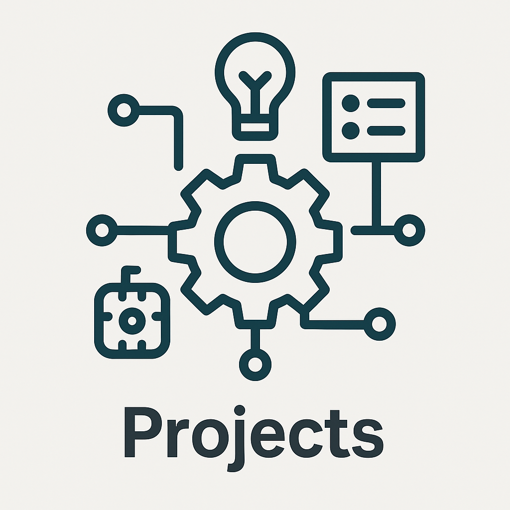

Jiarong (Bill) Lu
Computer Engineering Student @ University of Waterloo
Email: j94lu@uwaterloo.ca
Passionate about embedded systems, robotics, and AI-driven solutions.
Learn MoreProfile Highlights
Technical Skills
Languages: C, C++, Python, VHDL, Lean, HTML
Tools: VS Code, GitHub, WordPress, Premiere Pro, STM32CubeIDE, Docker, CAD, Unreal Engine, Dify, and more.

Projects
• Water Quality Monitor: STM32-based, TDS sensors, 3D-printed housing.
• Glory Media AI Transformation: Led AI workflow automation for digital publishing.
• High School Activity Website: WordPress, managed 60+ clubs.
Experience
• Waterloo Aerial Robotics Group: Embedded flight software, motor driver, PID control.
• Mindmatrix Technology: Embedded firmware, PCB design, mechanical testing.
• Bopoda Technology: Video production, streaming tech, ChatGPT business use.